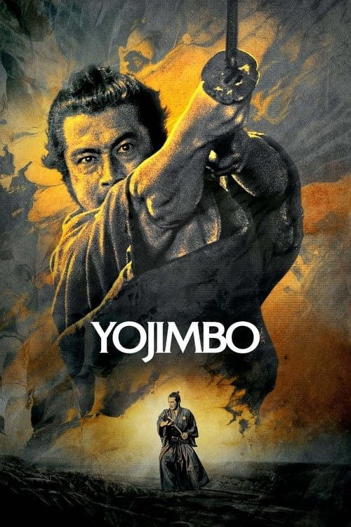

Yojimbo (El mercenario) (1961)
Sinopsis Rápida
Un samurái solitario llega a un pueblo dividido por dos bandas criminales, desatando una guerra sangrienta y estratégica donde solo él puede imponer el orden... o el caos.
Sinopsis Detallada
En un pueblo controlado por dos clanes rivales en la época feudal de Japón, un misterioso ronin llega buscando trabajo. Su habilidad con la espada es legendaria, y pronto se encuentra en el centro de una compleja lucha por el poder. Utilizando su inteligencia y destreza marcial, el samurái manipula a ambos bandos, sembrando la discordia y jugando con sus ambiciones para su propio beneficio. La violencia es brutal y elegante, mientras que la trama es una brillante muestra de suspense y estrategia. Una película maestra que redefine el género del western en un contexto oriental.
¿Por qué tenés que verla?
{{PUNTOS_CLAVE}}Idea Extra
Comparación entre Yojimbo y sus remakes (El bueno, el malo y el feo; A Fistful of Dollars).
{{CONTENIDO_RELACIONADO}}